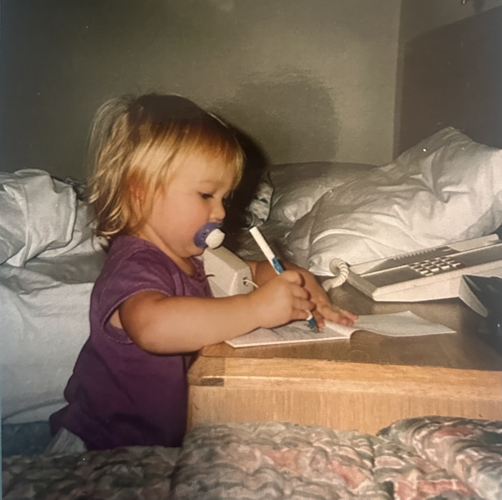
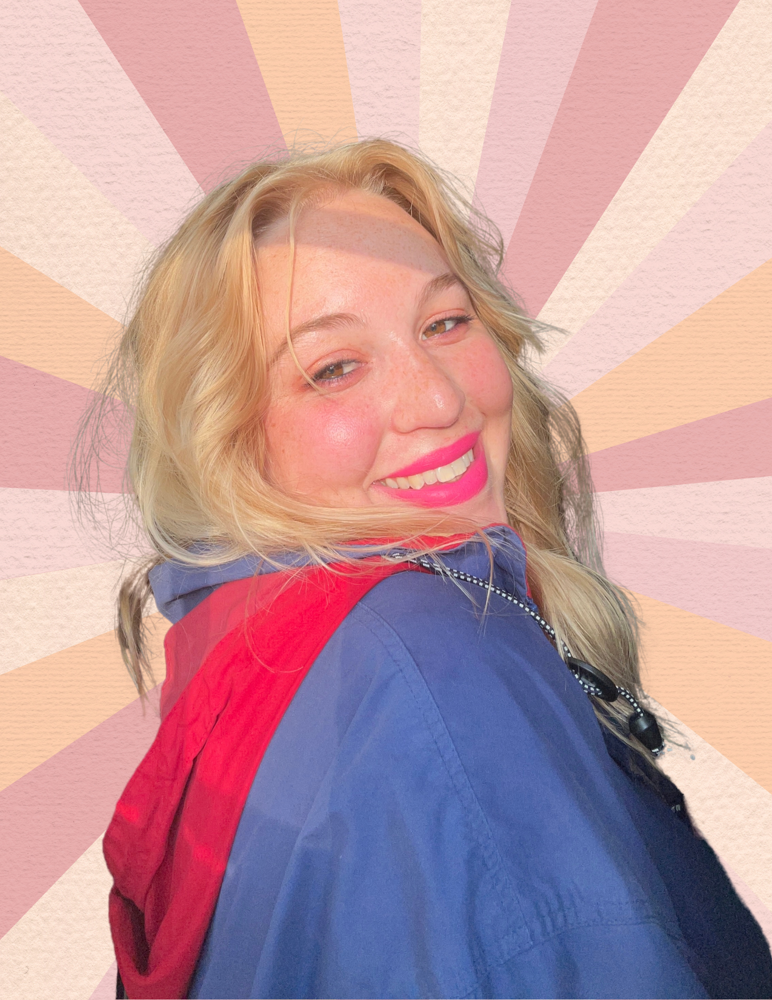

Suzannah Young is a published writer and artist specializing in journalism, mixed media visual art, and poetry based in Wichita, KS. As a journalist, she has written for publications such as The Miami Herald and the Wichita Business Journal and has won multiple awards from the Catholic Media Association including the Writer of the Year award in 2022 for the investigative piece "Exposing Amazon." Suzannah graduated from Barry University in 2023 with her BA degree in Communications and Media Studies, and in 2025 completed graduate level classes at City University of London under the Magazine Journalism MA program. Her poem "Passing Through the Sea" was published in the 2023 edition of the Barry University literary magazine, What Oft Was Thought. The writer and artist currently resides in Wichita, KS where she is pursuing her dream of becoming an accredited author.
Suzannah has been doing art ever since she could pick up a crayon. In high school, Suzannah started to explore collaging and painting as ways to explore her feelings as a young woman in the modern world. Since then, Suzannah has continued to do art in styles including mixed media (collaging and painting), collage, and abstract acrylic. Suzannah's artwork is colorful, reflective, insightful, honest, and diverse. Some of her pieces portray intense emotions of sadness and rage while others are ones she would describe as "lighthearted, fun, and silly." Through her artwork, Suzannah depicts her personal feelings about the world, thoughts about life, and struggles with mental illness in what she hopes is a relatable way.
Suzannah started writing poetry in mid 2023 as a way to combine her creativity with love for writing. Since then, she has written well over 100 poems, including a poetry book that is currently in the beginning stages of publication. Poetry is one of Suzannah's favorite ways to express herself and unleash her emotions in a personal way that she hopes resonates with others.